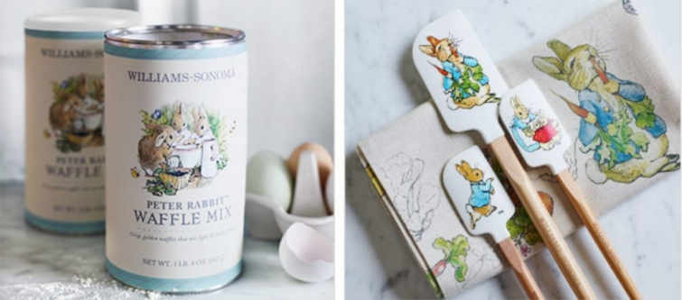
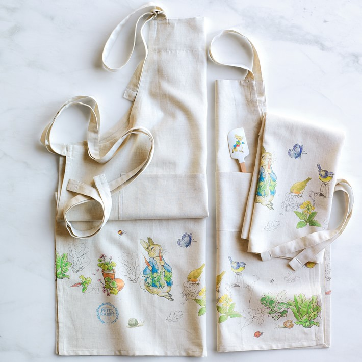
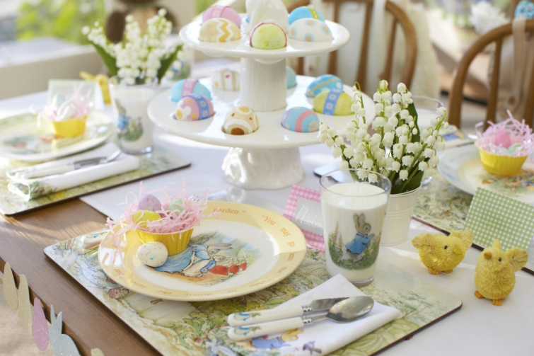

.png)
.PNG)
.PNG)
.PNG)
.PNG)
.PNG)
.JPG)
.JPG)
.PNG)
.PNG)


source
Happy first week of spring sweet readers! I hope Spring has made her appearance where you are.  She is in glorious full bloom here. 🙂  A few springs ago, Williams Sonoma began to carry Peter Rabbit items for Easter, and I have wanted to purchase all of them each year.  I know.  All of our children are grown, and there is not a stitch of pastel anywhere in this house, but that hasn’t stopped me from loving the sweet designs.  They are just so perfect for Easter.
source
When our first child was about a year old, Â I used a number of Beatrix Potter items in his nursery, and of course he had the set of little books. Â I was very much a fan of pastels at that time (especially pale yellow and baby blue) and even did my classroom in a Peter Rabbit garden theme using pages from a large coloring book as patterns. Â It was a very sweet and charming look. Â Williams Sonoma’s sister store, Pottery Barn Kids, could provide all I need today if I wanted to do that again. Â Isn’t this pbkids’ Easter table just precious?!
source
Several years ago Baby Gap carried a Peter Rabbit line.  It is a good thing we did not have young ones around here because I would have purchased everything!
And if we had little children here for Easter I know I would want to do a full blown Peter Rabbit egg hunt and party.  There is just so much inspiration out there for it!  Take a look at this sweet birthday party Claire at A Preppy Perspective did.  Yes, I know it is a birthday party, but you can use so many of her ideas for an Easter brunch.  I love the mint “plants” in “dirt” cups with the wooden spoon plant markers. 🙂
Zuni’s party at Chickadee Home Nest is a big Peter Rabbit extravaganza! Â If you are looking for ideas for ways to serve your Easter brunch, be sure you check out the entire post.

If you are lucky enough to be able to host an Easter party outside, Courtney’s Peter Rabbit party at Sweeter than Cupcakes has some precious decor ideas to steal borrow. (I really really want the little sweater on the sticks! 🙂 )
Be sure you take a peek at all the photos in this garden party in the next link. Â The cake is gorgeous, but you will want to see what they did with the flower pots too. Â (Just scroll down when you get to the site. Â All the photos will be there.)
Of course, an Easter garden party does not have to be a Peter Rabbit theme. Â Flowers can take center stage as well. Â Wouldn’t you love to have that chocolate cake?! Â (Although I would think it is too pretty to eat.)
And children are not the only ones who can enjoy an Easter garden party.  The beautifully styled party below was for adults. 🙂 (Just look at the many great food ideas – I would love to copy those Caprese skewers!)
More Easter garden party food…
chocolates. 🙂
and cucumber sandwiches cut with cookie cutters.
These chocolate dipped pretzel rods make great party favors or gifts.
Or you can follow the diy directions for making these carrot gift boxes.
Aren’t they precious?!
Back to food…(can’t stay away from it very long, can we?) Â Chocolate dipped strawberries make great stand in “carrots” to have “growing” out of the cookie dirt.
I really need to make these.
Carrot (cake) cookies anyone?
Of course the real reason for Easter has nothing to do with Peter Rabbit, the Easter Bunny, or carrots. All of those are pretty and charming things, but the real reason is to celebrate the risen Lord.  These cookies are just perfect for that (and pretty and charming too. 🙂 )
If the cookies look too complicated for you, how about Easter eggs that are simply decorated with a paint pen…
or a Sharpie marker.
If you need gift bags, here is a diy using a gold Sharpie marker.
And finally, I know this pink sign has floated around Pinterest for a couple of years, but it is too perfect to not post here today for Easter inspiration. Â There are directions for making it on the site.
But there will be not be any pink nor any Peter Rabbit in our house for Easter decorating this year.  I am going in a completely different direction, and you can see it all on Friday when I am part of Marty’s Spring Home tour.  You can find all of the daily links below.  Marty does a great job of hosting this, and she pulls together a big variety of styles.  (I think I am the token “traditionalist” in the bunch. LOL)  Even if we do not have the same decorating direction, I think it is fun to find a new idea or two from each bloggers’ vignettes.  I hope you will hop through the tour each day. 🙂
Hope you enjoy!
Â
Until next time…


.PNG)
Such sweet ideas for Easter decorating! I’m looking forward to the Spring Home Tours!
Too cute! I am inspired to pull out my Peter Rabbit things! Easter snuck up on me this year! Happy Easter!
Kelly,
This is the most adorable Easter post in all of my blog land. Love it! Thank you for all the inspiration.
Happy Easter!
DiAnne
Hi, Kelly. I just got a very exciting email from a friend who was visiting you and saw that you had included (and linked!) my Peter Rabbit birthday party post from my lil’ ol’ blog!! That just makes my day!! Thanks so much!! I haven’t been blogging/visiting much lately, but funny thing, I was visiting you just the other day! Thanks soooo much! Wishing you and your family a blessed Easter. ~Zuni
Kelly, such wonderful inspiration! Who doesn’t love Peter Rabbit, and I have a beautiful 26 year old plush Peter tucked away in his warren, complete with his little blue jacket. He, along with the Beatrix Potter books, must be part of our Easter decor. I would never have thought to do that! The cookies and eggs are indeed beautiful reminders of the reason we celebrate Easter. As always, thank you.
Love all those cute and clever ideas!! Thanks!?
Many many fun ideas. I have a lot of Beatrix Potter dishes…gifts for when my daughter was born Now I have a granddaughter and you have inspired me to bring them out. Thank you and Happy Easter!!
Jane
Kelly,
I really like all of your inspiration. The chocolate covered strawberries to look like carrots is my favorite. I do love Peter Rabbit. Thanks for sharing. Have a wonderful and blessed Easter! Take care.
Dawn
Thanks for all the inspiration!! I’m knee deep in planning our annual gathering at our home. Mine won’t be as pretty as those though. 😛 We’re expecting 46+ with all my husband’s big family. Thank goodness it will be warm enough to be outside. 🙂 Can’t wait to find a few moments to follow your links. 🙂
Kelly, what a wonderful post! I just love everything! Peter Rabbit is perfect for this time of year. Do you follow the Beatrix Potter Society blog and Twitter, etc. accounts? Now I want to pull out and watch Miss Potter again lol 🙂
All the creative ways with food – wow! I’m saving this post! Such great ideas, and I have friends coming in two weeks with their two little girls. I would love to add a fun treat or two to their entertaining. Have a blessed Easter! Thanks for all you do for our blog. Your creativity and love for live and your readers really shines through! He is Risen indeed!!!
Oh yay, Peter Rabbit! Count me in. How sweet to use that in your classroom. Just bought a Peter Rabbit Easter banner & cupcake toppers at Home Goods. Maybe I can’t decorate my girls’ rooms that way anymore, but Peter is always welcome around here.
Looking forward to your tour!
Hi Kelly! What a lovely surprise I had when I discovered your post today! It is so nice of you to have linked to my blog, I can’t find the words to describe how happy I was 🙂 It totally made my day!
Peter Rabbit is a super cute theme indeed and it was so much fun to use it for our little boy 1st birthday, I’m totally ready to do it again for Easter!
Thank you again and I wish you already a very Happy Easter!
Xoxo
Claire
Can you hear me ewwing and awwing from there?:) Beatrice Potter and her drawings/paintings are absolutely my favorite!! Used fabric and moffits from Peter Rabbit and his friends in my granddaughter’s nursery– 20 years ago! Sweet memories. I was taking a break from my cleaning and decorating when I saw your post and quickly scrolled through and promised myself to visit again at my next break. Looking forward to your house tour on Friday! Hope I am finished with my floors and all cleaning by then. 37 degrees here this morning — brr:) Got to get hopping! Hope you are enjoying this Blessed Holy Week as we pause to reflect on the true reason of Easter.
Kelly,
Where to begin? First, I absolutely have always been a huge Beatrix Potter/Peter Rabbit and friends fan. I raised boys and other than the books, I’m not sure they cared for the stuffed toys I foisted on them, Squirrel Nutkin and Peter! Anyway, now that I have granddaughters, I’m waiting for the little one to be old enough to love it as much as grandma. Then I can break out the Beatrix Potter 3-piece china sets I own and we can do some of these fabulous ideas. Those mini carrots cut to look like full sized carrots with tops are adorable. I’m headed back to the top of your post so I can visit the links for the darling party ideas. Thank you.
I can hardly wait to see what you’ve come up with this Friday on the home tour.
xo,
Karen
I just love that little blue cardigan. I am coming back to this post this evening to further delve into all these goodies. They all look adorable. I can’t wait to see your spring tour.
Happy Easter to you!
Love the bunny stuff, but I’m so glad you included the real reason for this wonderful season! Our risen Savior Jesus! Have a blessed Easter.
So sweet! I love what you’ve curated!
Such a great post. This makes me want to get out my daughter’s Peter Rabbit plate, cup, and silverware. I wonder if she would want to use it again this Easter…21 isn’t too old for Peter Rabbit, is it? Thank you again for such a beautiful post.
I want to wish you a blessed Easter and thank you for reminding us of what Easter is really about. I do delight in Peter Rabbit as well, and every wonderful thing about spring and nature reminds me to give glory to the Lord.
I know I must sound like a “gusher” to you, Kelly, but every post is greater than the one before! This Easter blog is really inspiring. Can’t wait to share with my family. The “pantry” entry sent them into “Dreamland.” My youngest brother, who is a great cook and “pantry keeper,” printed off the pictures for the house he and his wife plan to build in the next few years. Jessica, my cousin’s daughter, was teary-eyed over the pantry shots. She’ll love the Easter blog too. And a very Happy Easter to you and yours! I get excited each time I see “you” in my inbox! He is risen! He is risen indeed! Praise His high and holy name forever!
Peter Rabbit was also a favorite of mine when my boys were babies. I think Kennestone Hospital gave us a Peter Rabbit diaper bag or something that got me on the path. I made a window seat cushion for the nursery out of the PR fabric with matching curtains.
Sigh . . . those were the days! Happy Holy Week to you. Can’t wait to see your tour!